Typometrics
Typology without types.
Instead of sorting languages into types, typometrics places every language as a point on continuous scales measured in syntactically annotated corpora: what share of its objects follow the verb, how far a dependent sits from its head. The shape of the resulting cloud is the finding. An empty corner is a universal.

What is typometrics?
Typometrics is the study of the distribution of languages in scatter diagrams built from empirical measures on corpora. In some sense, it is typology without types.
Gerdes, Kahane & Chen (2021), Glossa
Classical word-order typology assigns each language a type (SVO, SOV, prepositional) and looks for implications between types. But most languages are not one type: German objects precede or follow the verb depending on the clause, and Chinese has both prepositions and postpositions.
Typometrics keeps the proportions. Measured over the treebanks of Universal Dependencies, a language becomes a point: 7% of English subjects follow their verb, 0.4% of Japanese ones. Plotting two such measures against each other shows which combinations languages use and which they avoid. A universal then appears as an empty region of the plot.
grugrutyp, the typometrics explorer
The first typometrics site offered a fixed set of precomputed measures. In grugrutyp every measure is a query you can write and edit, run live over all of UD and SUD.
Any measure is a pair of queries
A scope says what to count (all subject relations); a response says which of those qualify (the subject follows its verb). Each language gets 100 × response / scope, written in the Grew query language.
Plot a measureOne or two dimensions
Strips by family or scatter plots of two measures, coloured by family, area or morphological type, with confidence intervals for every language.
Open the plot viewSee the sentences behind a point
Click any language to open the matching trees. Every percentage can be traced back to the sentences it was computed from.
Search the treebanksNew quantitative universals
Curated results from a systematic search over relations, parts of speech and directions. Each opens as a live, editable plot.
Read the findings How they were foundWhere to start
Five questions, each opening grugrutyp on a ready-made plot. Change the relation, the part of speech or the direction, and watch the cloud move.
Where does the subject go?
The share of subjects that follow their verb, one strip per family. Most languages sit far left; verb-initial languages stand out.
Open plotDo subjects precede objects?
In almost every language, yes, in the majority of clauses. One clear exception in 160 languages. Which one?
Open plotVerbs and adpositions agree
Objects after the verb against prepositions: two crowded corners and a few telling exceptions. The figure at the top of this page, live and editable.
Open plotThe triangle: pronouns versus nouns
Nominal objects follow the verb at least as often as pronominal ones, so half of the plot stays empty. This is the canonical example of the 2021 paper.
Open plotHeavier objects go further right
Objects of one word against objects of four or more. Points above the diagonal are languages where heavy objects follow the verb more often than light ones.
Open plotNew to plots like these? grugrutyp's About dialog explains how to read them: what an empty corner means, error bars, and colouring by family or area.
Vocabulary
The handful of terms you will meet on the plots and in the papers.
- Treebank
- A corpus whose sentences are annotated with a syntactic tree: every word is attached to the word it depends on, with a relation label.
- Universal Dependencies (UD)
- A collaborative project annotating treebanks for hundreds of languages under one scheme. Release 2.19 has 402 treebanks in 226 languages.
- SUD
- Surface-Syntactic UD, an automatic conversion of UD in which function words (auxiliaries, adpositions, conjunctions) head their phrases. Its dependency directions are typologically meaningful, so measures use SUD by default.
- Head, governor, dependent
- In a dependency, the governor (head) is the word the dependent attaches to: ate governs apples in “she ate apples”.
- Head-initiality
- For a relation, the share of its dependencies in which the head comes first. Called direction in the 2021 paper.
- Dependency distance
- How many words apart a dependent and its head are, signed (left or right) or absolute. Long dependencies are costly, and languages tend to keep them short.
- CFC
- Category–function–category: a relation together with the part
of speech of its head and dependent, such as
VERB-comp:obj-PRON. Lets a measure separate pronominal from nominal objects. - Scope and response
- The two Grew queries that define a measure in grugrutyp: the scope selects what to count, the response selects which of those qualify. The value is 100 × #(scope ∧ response) / #(scope).
- Grew
- A graph query language for treebanks (grew.fr).
pattern { V -[1=subj]-> S }finds every subject relation. - Language point
- One point per language. A language with several treebanks is measured by summing their counts, never by averaging their percentages.
- Implicational universal
- “If a language does X, it does Y.” On a scatter plot this shows up as an empty corner: a triangle or a band with no languages in it.
- Flexibility
- How freely a relation alternates between the two orders, as opposed to always taking the same side. Studied in Kahane, Peng & Gerdes (2023).
- Menzerath–Altmann law
- The bigger a construction, the smaller its parts: clauses with more dependents tend to have shorter ones. Measured per language in grugrutyp and in the Menzerath study below.
- Confidence interval
- Each point carries a 95% Wilson interval: a language measured on 40 cases gets a visibly wider error bar than one measured on 400,000.
The data
Everything is computed from the Universal Dependencies treebanks and their SUD conversion, updated with each UD release. Learner corpora, duplicated texts and re-tokenized copies are left out of the measures but stay searchable.
Every language carries a genetic group and branch, a coarse grouping, a geographic area and a morphological type. These are curated, not derived, and the plots can be coloured by any of them, which helps tell inheritance from areal convergence.
Annotation guidelines
SUD: the current guidelines are pebbles.surfacesyntacticud.org, updated continuously by the SUD designers (source on GitHub). The older guidelines.surfacesyntacticud.org is no longer up to date. UD: universaldependencies.org/guidelines.html.
Guidelines change between releases, and a measure that names a relation changes
with them. In SUD 2.19 the complement of an adposition or a subordinator became
comp (it was comp:obj), and possessors
(mod:poss) and classifiers (mod:clf) got their own
relations. Check the release notes of your data before comparing numbers across
releases.
Papers
- Kim Gerdes, Sylvain Kahane & Xinying Chen (2021). Typometrics: From implicational to quantitative universals in word order typology. Glossa: a journal of general linguistics 6(1), 17. doi:10.5334/gjgl.764
- Xinying Chen, Kim Gerdes, Sylvain Kahane & Marine Courtin (2021). The co-effect of Menzerath–Altmann law and heavy constituent shift in natural languages. Proceedings of QUALICO 2021. PDF
- Sylvain Kahane, Ziqian Peng & Kim Gerdes (2023). Word order flexibility: a typometric study. Proceedings of the Seventh International Conference on Dependency Linguistics (Depling 2023), 68–80. ACL Anthology
How grugrutyp's automatic findings are mined, and why their p-values are not evidence: Automatic findings.
When citing the site or a measure computed with grugrutyp, please cite the 2021 Glossa paper and give the UD release (2.19).
Companion sites
The Menzerath–Altmann law in the verbal domain in 180 languages
Pegah Faghiri, Kim Gerdes & Sylvain Kahane. Data, compliance tables and plots.
OpenThe dependency flux as a measure of syntactic complexity
Sylvain Kahane & Kim Gerdes. Spoken and written French: article, data, code.
OpenThe original typometrics site
Five families of precomputed measures on UD 2.12, with its presentation of the measures and of graph similarity.
Open the legacy site
People
grugrutyp builds on Grew (Bruno Guillaume), on SUD (Gerdes, Guillaume, Kahane & Perrier 2018), on the scope/response design of grex (Herrera, Le Corro & Kahane 2024) and on the graph-database encoding of Deworetzki & Ljunglöf (2025).